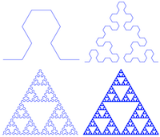

Sonic L-Systems
 In 1968, Aristid Lindenmayer introduced "L-systems" to the world. Basically, this is an iterative rewriting system of rules that operates on a string beginning with an "axiom" or initial string.
Using turtle graphics it is possible to draw all manner of fractal "pathological curves" with this technique.
Being a music nerd, I thought, "Why not make this play notes instead of draw lines?" And so the program lindenmayer-midi was born.
The program is short but has a few parts. The first is the preamble that says we are a perl program and that we will be fooling with MIDI things:
#!/usr/bin/env perl
use strict;
use warnings;
use MIDI::Util;
Next, the program takes arguments from the command-line user:
my $rule = shift || 2,
my $iterations = shift || 4;
my $string = shift || 'F';
my $distance = shift || 'qn';
my $theta = shift || 1;
These variables specify the rule to use (shown below), the number of iterations to perform, the initial string (axiom), the "distance" – a musical duration like the quarter note, and theta – the amount to increase/decrease the current note value by.
Next up is to define the actual re-write rules to use:
my %rules = (
...
# Sierpinski arrowhead curve: start=F
5 => {
F => 'G-F-G',
G => 'F+G+F',
},
...
);
The program then initializes a MIDI score and sets the initial note to middle C (MIDI note 60):
my $score = MIDIUtil::setup_midi( patch => 0, bpm => 300 );
my $note = 60;
Ok. Now for the meat of the program – a dispatch table of MIDI and note events, re-writing the string according to the given rules, and finally translating each string symbol into a dispatched command:
my %translate = (
'f' => sub { $score->r($distance) },
'F' => sub { $score->n( $distance, $note ) },
'G' => sub { $score->n( $distance, $note ) },
'-' => sub { $note -= $theta },
'+' => sub { $note += $theta },
);
for ( 1 .. $iterations ) {
$string =~ s/(.)/defined($rules{$rule}{$1}) ? $rules{$rule}{$1} : $1/eg;
}
warn "$string\n";
for my $command ( split //, $string ) {
$translate{$command}->() if exists $translate{$command};
}
Lastly, the program writes the MIDI file that was created.
$score->write_score( $0 . '.mid' );
Here are some examples. They are decidedly not music; more like Metroid on crack.
MIDI files: Sierpinski and Koch-islands-and-lakes. And here is an MP3 rendering of the former:
On YouTube:
,
,
,
Not the easiest to dance to…